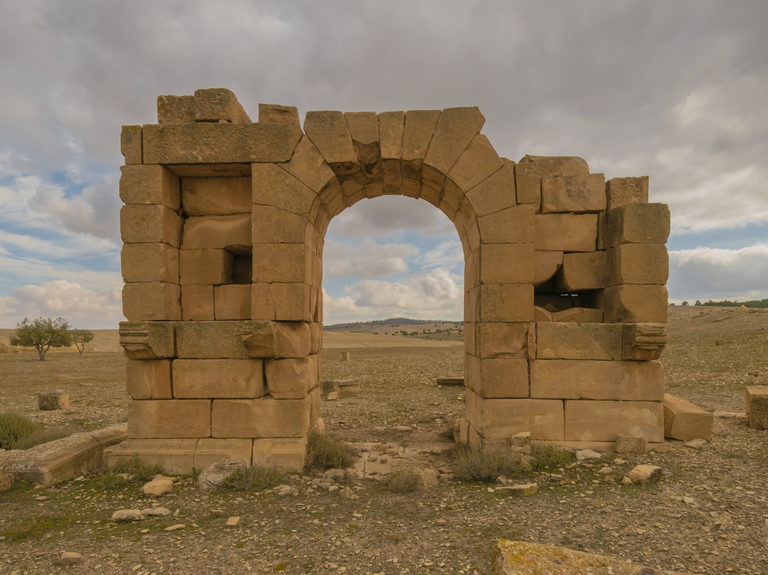
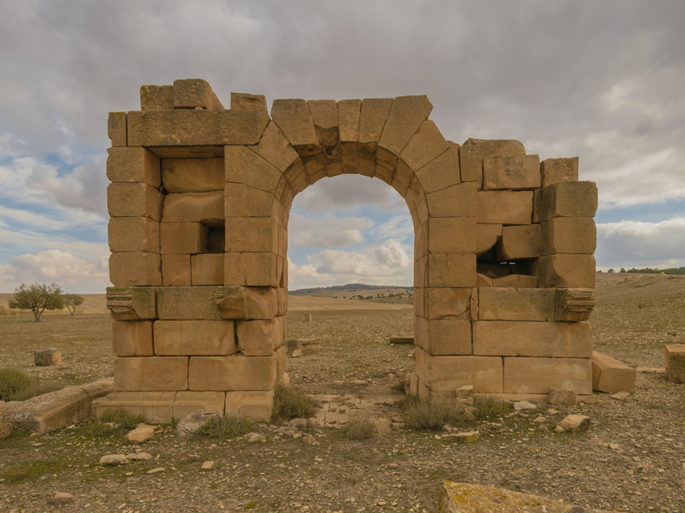
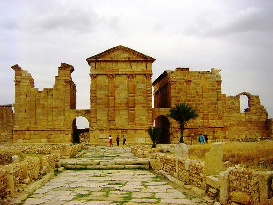
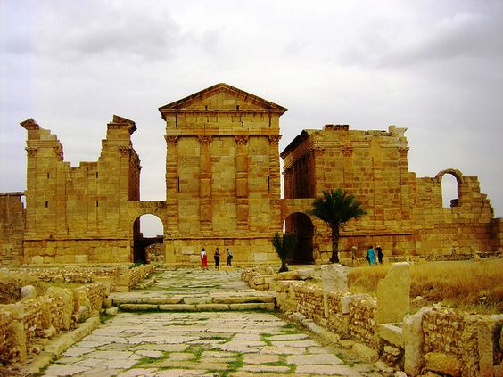

Kasserine est située dans le centre-ouest de la Tunisie. La ville se trouve à 200 kilomètres à l'ouest de Sfax, 246 kilomètres au sud-ouest de Tunis et 166 kilomètres au sud-ouest de Sousse.Kasserine, est une ville située au centre-ouest de la Tunisie ; elle est le chef-lieu du gouvernorat du même nom. La population atteint 83 534 habitants en 2014.

Au ve siècle, Kasserine est le lieu de prédilection de saint Augustin. Celui-ci y fait construire un monastère, où le gouverneur Solomon trouve la mort en 544, après la désastreuse bataille de Cillium contre le chef berbère Antalas. Solomon avait succédé à Bélisaire dans le gouvernement de l'Afrique sous l'Empire byzantin, avant d'être titré Patrice, et a joué un rôle important dans les guerres contre les Vandales et les rebelles berbères.

Sbiba domine une grande plaine agricole spécialisée dans l'arboriculture fruitière, notamment la culture de la pomme et de la tomate. En effet, la moitié de la production nationale est issue de la délégation de Sbiba qui abrite 40 % des pommeraies du pays.
 



 
